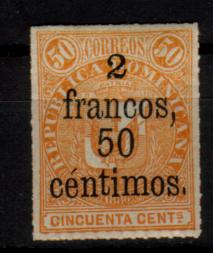

(Genuine stamp, obtained thanks to Forgeries idenfication site of Bill Claghorn)
Return To Catalogue - Dominican Republic 1865-1878
Note: on my website many of the
pictures can not be seen! They are of course present in the
catalogue;
contact me if you want to purchase it.
For stamps of Dominican Republic issued, before 1879, click here.
(Genuine stamp, obtained thanks to Forgeries idenfication site of
Bill Claghorn)
1/2 r violet 1/2 r violet on blue 1 r red 1 r red on lilac
Value of the stamps |
|||
vc = very common c = common * = not so common ** = uncommon |
*** = very uncommon R = rare RR = very rare RRR = extremely rare |
||
| Value | Unused | Used | Remarks |
| 1/2 r violet | *** | *** | |
| 1/2 r violet on blue | *** | *** | |
| 1 r red | *** | *** | |
| 1 r red on lilac | *** | *** | |
Forgeries, example:

(left genuine, right forgery: images obtained thanks to Forgeries
idenfication site of Bill Claghorn)

These forgeries can also be found in 'The Fournier Album of
Philatelic Forgeries', reduced sizes
The genuine stamp has the left central leaf branch ending well above the top of the 1 denomination. In the forgery on the right it is ending too low. I have also seen the 1/2 r of this forgery. All the forgeries I've seen were cancelled with a thick black horizontal bar.
Page from a Fournier Album.
Some bogus 'UPU' overprints, reduced sizes
Various stamps and postal stationery were overprinted 'UPU' and a cross in blue, black or red and with a new value in March 1891. This issue was made under the influence of a stamp dealer from Paris and can therefore be considered as speculative or bogus. On this set were 'issued' the following values: 80 c (black or red) on 1/2 r, 90 c on 1 r, 1 P (red) on 1/2 r.
Fournier apparently also sold an other type of forgeries. Here three forgeries from the Fournier Album of Philatelic Forgeries, with 'FAC-SIMILE' printed on the backside:
Reduced sizes

With underprint
1 c green 2 c orange 5 c blue 10 c red 20 c brown 25 c lilac 50 c yellow 75 c blue 1 P gold
Two types of these stamps exist; without underprint (1880) and with underprint (1881). They are all rouletted.
Value of the stamps |
|||
vc = very common c = common * = not so common ** = uncommon |
*** = very uncommon R = rare RR = very rare RRR = extremely rare |
||
| Value | Unused | Used | Remarks |
| Without underprint | |||
| 1 c | ** | ** | |
| 2 c | * | * | |
| 5 c | ** | ** | |
| 10 c | *** | *** | |
| 20 c | ** | ** | |
| 25 c | ** | ** | |
| 50 c | ** | ** | |
| 75 c | *** | *** | |
| 1 P | *** | *** | |
| With underprint | |||
| 1 c | * | * | |
| 2 c | * | * | |
| 5 c | ** | ** | |
| 10 c | ** | ** | |
| 20 c | ** | ** | |
| 25 c | ** | ** | |
| 50 c | ** | ** | |
| 75 c | *** | *** | |
| 1 P | *** | *** | |
Surcharged (1883)



5 c on 1 c green 10 c on 2 c orange 25 c on 5 c blue 50 c on 10 c red 1 F on 20 c brown 1 F 25 c on 25 c lilac 2 F 50 c on 50 c yellow 3 F 75 c on 75 c blue 5 F on 1 P gold
Many of these surcharges exist in two or three types. The surcharges were applied to the stamps without and with underprint. Many errors also exist (all very rare).
Value of the stamps |
|||
vc = very common c = common * = not so common ** = uncommon |
*** = very uncommon R = rare RR = very rare RRR = extremely rare |
||
| Value | Unused | Used | Remarks |
| 5 c on 1 c | *** | *** | Without or without underprint Two types of surcharge |
| 10 c on 2 c | *** | *** | Without or without underprint Two types of surcharge |
| 25 c on 5 c | *** | *** | Without or without underprint Two types of surcharge |
| 50 c on 10 c | R | *** | Without or without underprint Two types of surcharge |
| 1 F on 20 c | R | R | Without or without underprint Three types of surcharge: small 'franco', broader 'franco' and 'Franco' (with capital F) |
| 1.25 F on 25 c | R | R | Without or without underprint |
| 2.50 F on 50 c | R | R | Without or without underprint |
| 3.75 F on 75 c | R | R | Without or without underprint |
| 5 F on 1 P | RR | RR | Without underprint: 1 type With underprint: 2 types |
45 c lilac essay

Forged '5 francos.' on 1 P stamp
Some bogus 'UPU' overprints, reduced sizes
Various stamps and postal stationery were overprinted 'UPU' and a cross in blue or black and with a new value in March 1891. This issue was made under the influence of a stamp dealer from Paris and can therefore be considered as speculative. On this set were 'issued' the following values: 1 c (red) on 5 c, 1 c (red) on 25 c on 5 c, 2 c (blue) on 20 c, 2 c on 1 F on 20 c.
In the Fournier Album of Philatelic forgeries a forged 1 P stamp can be found. Fournier also made a forged overprint '5 francos', presumably to be applied on this forgery.
Fournier forgeries, reduced sizes

Left genuine. Right a forgery, the smaller details are not the
same (background lines etc). It has a "FAUX" overprint.
1 c green 2 c red 5 c blue 10 c orange 20 c brown 50 c violet 1 P red 2 P brown Surcharged and overprinted '1905'
Sorry, no images available yet
2 c on 20 c brown 5 c on 20 c brown 10 c on 20 c brown
Value of the stamps |
|||
vc = very common c = common * = not so common ** = uncommon |
*** = very uncommon R = rare RR = very rare RRR = extremely rare |
||
| Value | Unused | Used | Remarks |
| 1 c | * | * | |
| 2 c | * | * | |
| 5 c | * | * | |
| 10 c | *** | * | |
| 20 c | ** | ** | |
| 50 c | *** | *** | |
| 1 P | R | R | |
| 2 P | R | R | |
| Surcharged (1905) | |||
| 2 c on 20 c | *** | *** | |
| 5 c on 20 c | *** | *** | |
| 10 c on 20 c | *** | *** | |

1 c green 2 c red 5 c blue 10 c orange
Value of the stamps |
|||
vc = very common c = common * = not so common ** = uncommon |
*** = very uncommon R = rare RR = very rare RRR = extremely rare |
||
| Value | Unused | Used | Remarks |
| 1 c | * | * | |
| 2 c | * | * | |
| 5 c | * | * | |
| 10 c | * | * | |
1/4 c black (non-issued newspaper stamp, design as 5 c) 1/2 c black (non-issued newspaper stamp, design as 1 P) 1 c lilac 1 c green 2 c red 5 c blue 10 c orange 20 c brown 50 c green 1 P black on blue 2 P brown on yellow
Value of the stamps |
|||
vc = very common c = common * = not so common ** = uncommon |
*** = very uncommon R = rare RR = very rare RRR = extremely rare |
||
| Value | Unused | Used | Remarks |
| 1/4 c | ** | - | |
| 1/2 c | ** | - | |
| 1 c lilac | *** | *** | |
| 1 c green | * | * | |
| 2 c | ** | ** | |
| 5 c | ** | ** | |
| 10 c | ** | ** | |
| 20 c | *** | *** | |
| 50 c | *** | *** | |
| 1 P | R | R | |
| 2 P | R | R | |


(Genuine stamp, obtained thanks to Forgeries idenfication site of
Bill Claghorn)
1/4 c blue 1/2 c red 1 c olive 2 c green 5 c brown 10 c orange 20 c lilac 50 c black 1 P brown
Value of the stamps |
|||
vc = very common c = common * = not so common ** = uncommon |
*** = very uncommon R = rare RR = very rare RRR = extremely rare |
||
| Value | Unused | Used | Remarks |
| 1/4 c | * | * | |
| 1/2 c | * | * | |
| 1 c | c | * | |
| 2 c | c | * | |
| 5 c | * | * | |
| 10 c | * | * | |
| 20 c | *** | *** | |
| 50 c | *** | *** | |
| 1 P | *** | *** | |
Forgeries, example:

(Forgery, image obtained thanks to Forgeries idenfication site of
Bill Claghorn)
The genuine stamps can be identified by a dot after "ATLANTICO" (the above forgery has no dot), and three clear white lines above "ANT" of "ATLANTICO" (only two clear white lines above "ANT" of "ATLANTICO" are present in the above forgery). I've been told that they might have been made by a forger in Genoa, Italy (N.Imperato?).
Another forgery?:
(Reduced size)
In the Fournier Album of Philatelic Forgeries, some forgeries sold by Fournier can be found (2 c, 10 c, 20 c and 50 c). They do have a dot behind 'ATLANTICO'.
Fournier forgery, reduced size.


1/2 c red and violet 1/2 c orange and black (1905) 1/2 c green and black (1906) 1 c olive and violet 1 c blue and black (1905) 1 c red and black (1906) 2 c green and violet 2 c lilac and black (1905) 2 c brown and black (1906) 5 c brown and violet 5 c red and black (1905) 5 c blue and black (1906) 10 c orange and violet 10 c green and black (1905) 10 c lilac and black (1906) 20 c lilac and violet 20 c olive and black (1905) 20 c green and black (1906) 50 c black and violet 50 c brown and black (1905) 1 P brown and violet 1 P grey and black (1905) 1 P violet and black (1906) Surcharged
'2 dos cts' on 50 c black and violet '2 dos cts' on 1 P brown and violet '5 cinco cts' on 50 c black and violet '5 cinco cts' on 1 P brown and violet '10 diez cts' on 50 c black and violet '10 diez cts' on 1 P brown and violet
Value of the stamps |
|||
vc = very common c = common * = not so common ** = uncommon |
*** = very uncommon R = rare RR = very rare RRR = extremely rare |
||
| Value | Unused | Used | Remarks |
| 1/2 c red and violet | * | * | |
| 1/2 c orange and black | ** | ** | |
| 1/2 c green and black | * | * | |
| 1 c olive and violet | * | * | |
| 1 c blue and black | ** | ** | |
| 1 c red and black | * | c | |
| 2 c green and violet | * | c | |
| 2 c lilac and black | * | * | |
| 2 c brown and black | * | c | |
| 5 c brown and violet | * | * | |
| 5 c red and black | ** | ** | |
| 5 c blue and black | ** | * | |
| 10 c orange and violet | ** | * | |
| 10 c green and black | *** | *** | |
| 10 c lilac and black | ** | * | |
| 20 c lilac and violet | *** | *** | |
| 20 c olive and black | R | * | |
| 20 c green and black | *** | *** | |
| 50 c black and violet | *** | *** | |
| 50 c brown and black | R | R | |
| 1 P brown and violet | R | R | |
| 1 P grey and black | RR | RR | |
| 1 P violet and black | R | R | |
Surcharged |
|||
| 2 c on 50 c | R | R | |
| 2 c on 1 P | RR | R | |
| 5 c on 50 c | *** | *** | |
| 5 c on 1 P | *** | *** | |
| 10 c on 50 c | *** | *** | |
| 10 c on 1 P | *** | *** | |
The forger Sperati made a forgery of the 1 P grey and black value. The distinguishing characteristics can be found in the BPA book. I don't have any image of such a forgery right now. He used a genuine stamp of lower value and deleted the image and printed his forged image on top of it. Therefore, the paper and cancels are genuine.

1 c green and black 2 c red and black 5 c blue and black 10 c orange and black 12 c violet and black 20 c red and black 50 c brown and black
The forger Bela Szekula offered remainders of these stamps with forged cancels. The above shown cancels could be forged; they all seem to have the cancel 'SANTO DOMINGO R.D. 20 ENE 02'.
1 c on 20 c yellow and black 2 c red and black 5 c blue and black 10 c green and black

'CENTAVOS' instead of 'CENTAVO'?
1 c on 2 c olive (overprint red or black) 1 c on 4 c olive (overprint red) 2 c olive (overprint red)
1 c on 4 c olive (overprint red) 'UN centavo.' on 10 c olive 2 c on 5 c olive
2 c red and black
1/2 c orange and black 1 c green and black 2 c red and black 5 c green and black 10 c lilac and black 20 c green and black 50 c brown and black 1 P violet and black
2 c red modified type of 1924
In 1922/1930 similar stamps were issued (also in 1 colour): 1/2 c lilac and black, 1 c green, 2 c red and 5 c blue. A slightly different design was issued in 1924 with the label with 'REPUBLICA DOMINCANA' curving upwards in the values 1 c green, 2 c red (see image above), 5 c blue, 10 c violet and black (two types '10' different) and 1 P orange and black.
1/2 c orange and black 1 c green and black 2 c red and black 5 c grey and black 10 c lilac and black 20 c olive and black 50 c brown and black 1 P violet and black
'MEDIO CENTAVO' (violet overprint) on 20 c yellow 1 c green (red overprint) 2 c red (red overprint) 5 c blue (red overprint) 10 c green (red overprint) 20 c yellow (red overprint)
Overprinted '1915' in red
1/2 c lilac and black 1 c brown and black 2 c green and black 5 c red and black 10 c blue and black 20 c red and black 50 c green and black 1 P orange and black Overprinted '1916' in red 1/2 c lilac and black 1 c green and black Overprinted '1917' in red
(Reduced sizes)
1/2 c lilac and black 1 c green and black 2 c green and black 5 c red and black Overprinted '1919' in red 2 c green and black Overprinted '1920' in red

1/2 c lilac and black 1 c green and black 2 c green and black 5 c red and black 10 c blue and black 20 c red and black 50 c green and black Overprinted '1921' 1 c green and black 2 c green and black
1 c green and black (1911) 2 c red and black 5 c blue and black 10 c green and black 20 c yellow and black
These stamps overprinted with '16 de Agosto 1904' or 'HABILITADO 1911' or 'HABILITADO 1915' are postage stamps (see there).
1 c olive (1924) 2 c olive 4 c olive 5 c olive 10 c olive
For the specialist: two colours exist of the values 2 c, 4 c, 5 c and 10 c: a brownish olive was issued in 1904 and a greenish olive was issued in 1913.
(At least the following other values exist: 3 c blue, 30 c red)
Reduced size
The following other values of the above stamp exist: 25 c green, 50 c yellow, 1 P brown, 5 P blue and 10 P red.
The above stamp exists in the following values: 1 c green and blue, 5 c blue, 10 c green, 25 c brown, 35 c red, 50 c violet, 1 $ green, 2 $ blue and 5 $ orange.
{kind=link}
{kind=link}